Gallery
Photos
Four decades of percussion in pictures — ensembles and concerts, workshops and lessons, meetings with great percussionists, and the very beginning in Vijlen. Click any photo to enlarge.
Selected
Highlights
Encounters with Billy Cobham, Thomas Lang, Jim Chapin, Nebojša Živković and many others — and moments from family, ensembles and the music fair in Frankfurt.


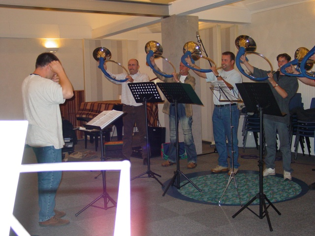

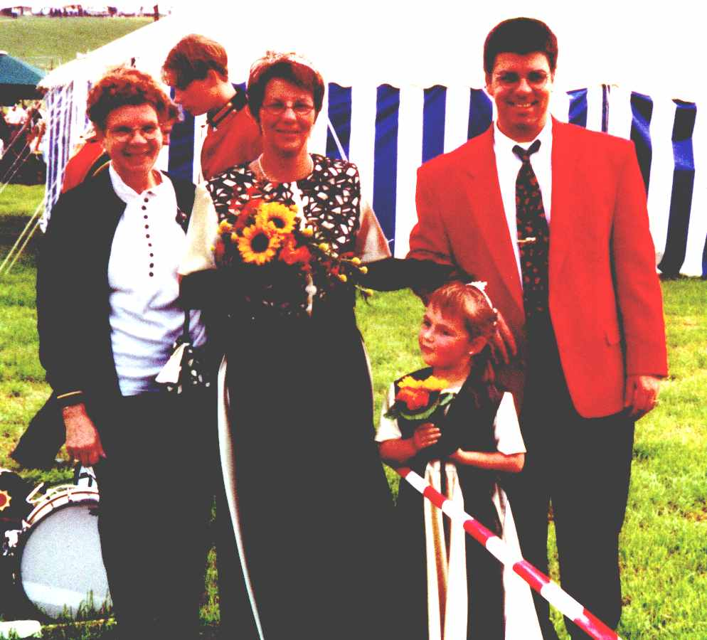
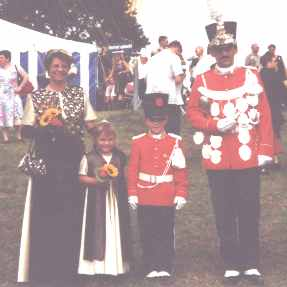
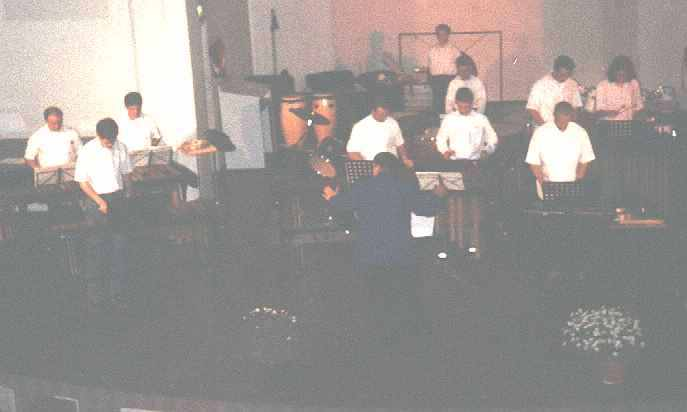
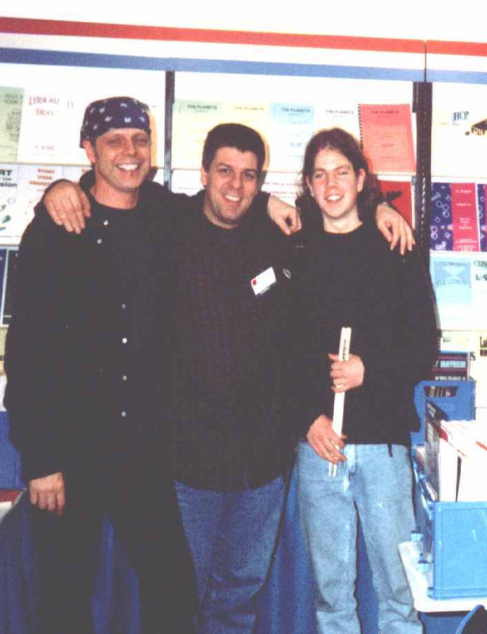
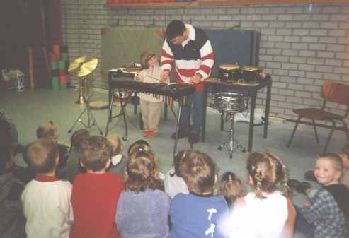
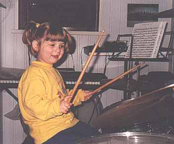

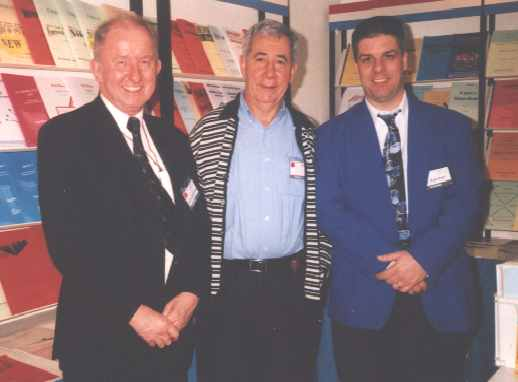
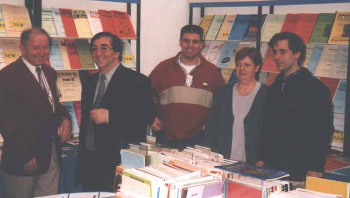
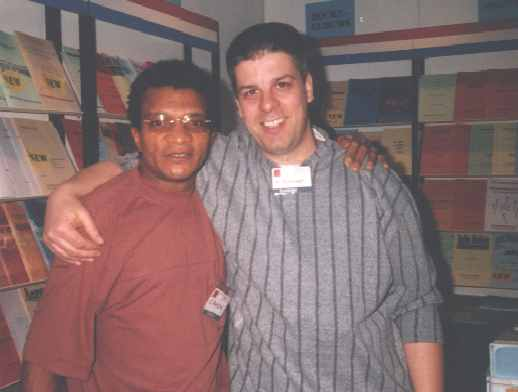


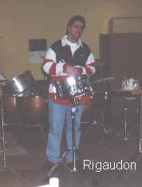
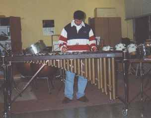

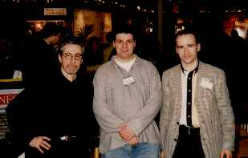
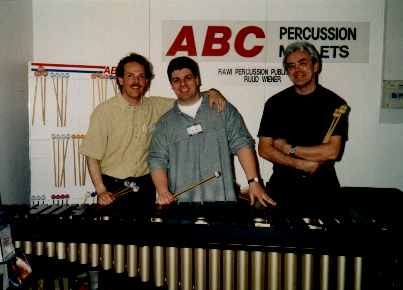
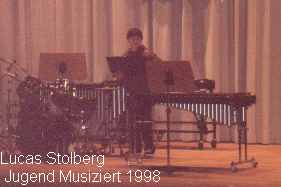
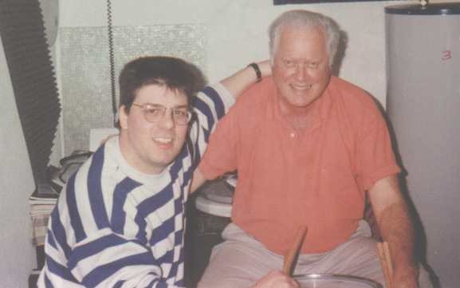
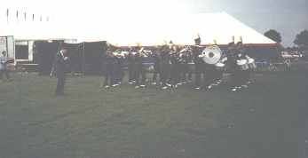
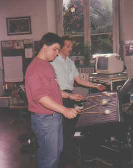
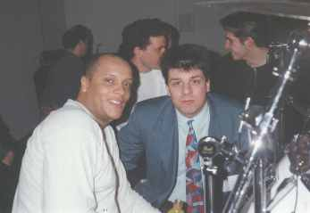
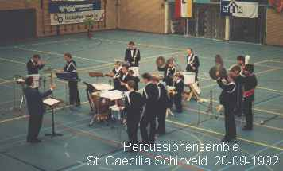
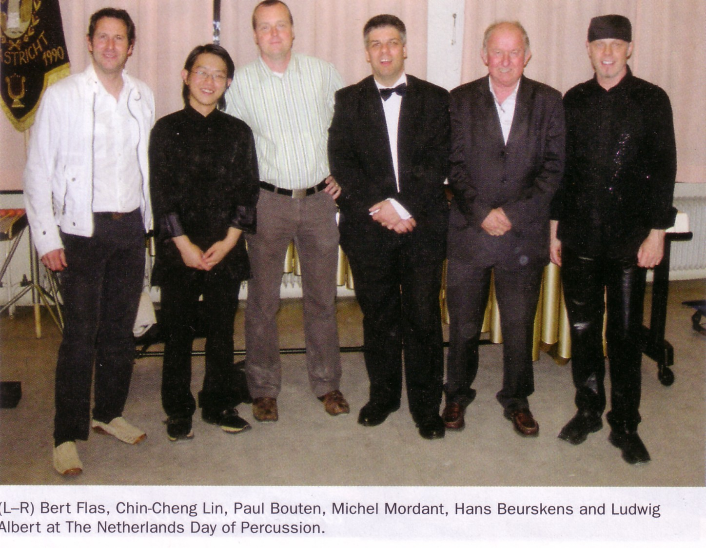
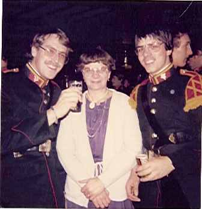
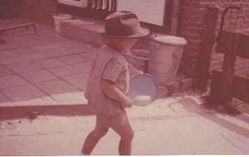
Photo archive
As director
Percussion Ensemble Musikschule Heinsberg
First rehearsal of Saul Goodman’s Scherzo for trio — xylophone: Zoë; two snare drums: Paul; timpani: Karl.
Percussion Ensemble Musikschule Eschweiler
First rehearsal of 2026 with Sander; Nacht der offenen Kirchen 2024; Tag des Ehrenamtes 2023; and the years 1991–2022.


St. Caecilia Broeksittard
First concert at Forum Sittard (2022); with rock group Powerized (2024); concert at Adams together with Ensemble JMS Eschweiler; summer concert.


Percussion group Concordia Einighausen

Percussion Ensemble Kreato Thorn


Drumband St. Stephanus Dieteren

St. Caecilia Schinveld
Samba bands — Ofden and Alsdorf


Youth percussion ensembles
Concert Langedael Vaals; Einighausen; Schimmert; Broeksittard; and an ice-cream outing with Schimmert and Limbricht.


Photo archive
Teaching
With famous percussionists
Marcel van Vugt, Mark Andreas Giesecke, Wessela Kostowa, Hans Beurskens, Paul Bouten, Thomas Lang and Vic Firth.


Photo archive
As a player
Timpani, Symphonie Orchester Kerkrade
2022, 2023 and 2024.


Orchestras and ensembles
Conservatory Maastricht (playing Carousel), Thorn, Treebeek, Maastricht, Thorn and Stolberg.


In church with Gisela Freialdenhoven, organ (2024)